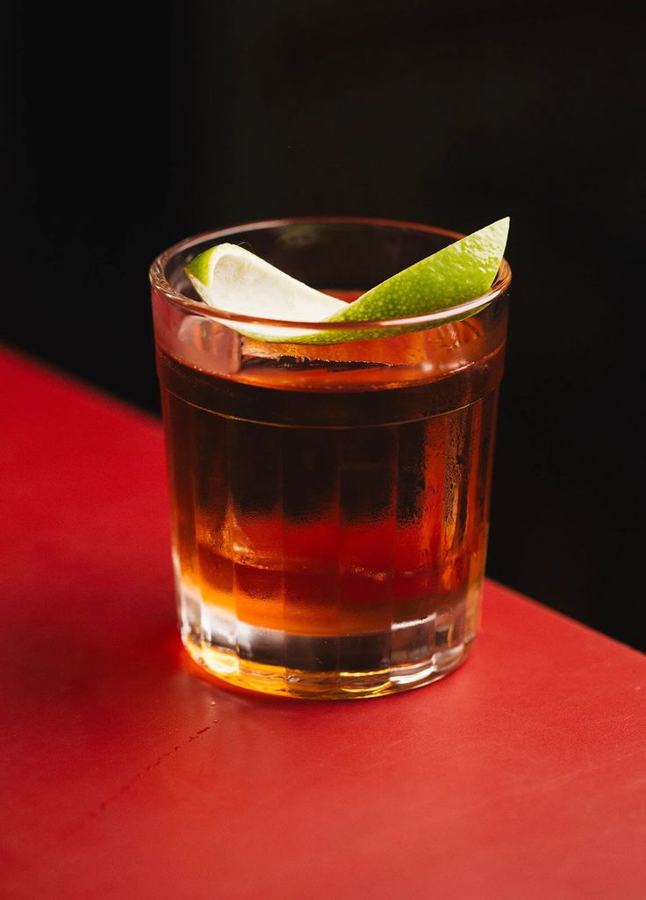
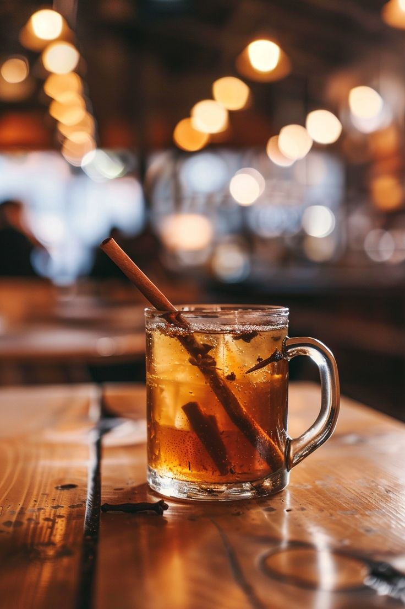
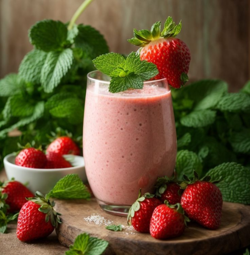
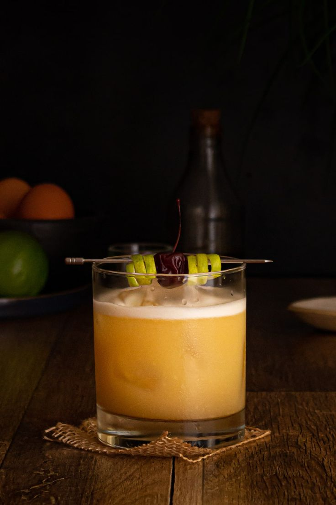
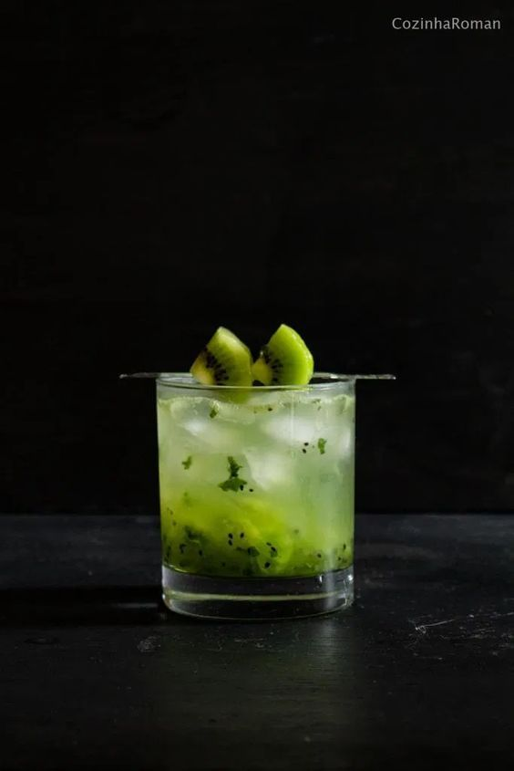

O drink brasileiro mais famoso: cachaça, limão, açúcar e gelo. Refrescante, equilibrado e marcante.
Tempo de preparo: 2 minutos

Cachaça, leite condensado e leite de coco. Cremosa, doce e tropical.
Tempo de preparo: 3 minutos

Drink clássico de boteco: cachaça e vermute tinto, às vezes com bitter. Amargo e encorpado.
Tempo de preparo: 3 minutos

Cachaça aquecida com gengibre, especiarias e açúcar. Típico das festas juninas.
Tempo de preparo: 20 minutos

Variação da caipirinha com morangos frescos. Doce, ácida e vibrante.
Tempo de preparo: 6 minutos

Cachaça, suco de maracujá e leite condensado. Refrescante e azedinha.
Tempo de preparo: 3 minutos

Cachaça, limão, açúcar e clara de ovo (tipo um Pisco Sour). Suave e espumoso.
Tempo de preparo: 3 minutos

Kiwi maceradas com açúcar e cachaça. Frutada, levemente adstringente e refrescante.
Tempo de preparo: 2 minutos

O Whisky que dava o nome ao drink, Whisky Sour, é deixado de lado para a entrada da cachaça.
Tempo de preparo: 2 minutos

O Negroni, que leva gin na receita original, harmonizou perfeitamente com a cachaça.
Tempo de preparo: 3 minutos

Essa combinação conferiu ao drink caribenho todo o charme da cachaça carioca.
Tempo de preparo: 4 minutos

A nova versão manteve o sabor suave e marcante do drink.
Tempo de preparo: 5 minutos